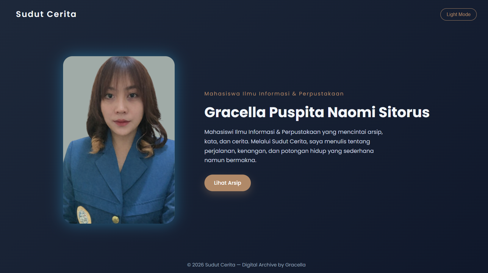
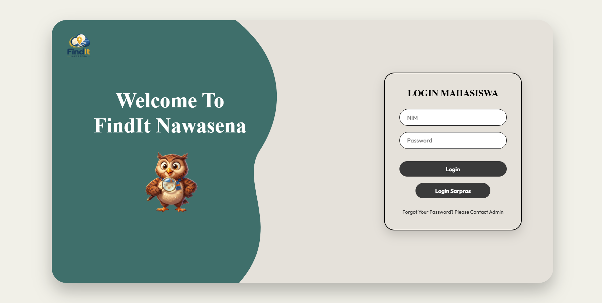
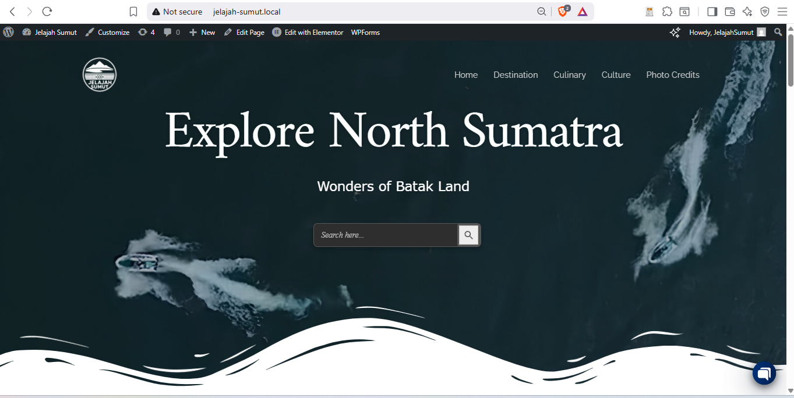
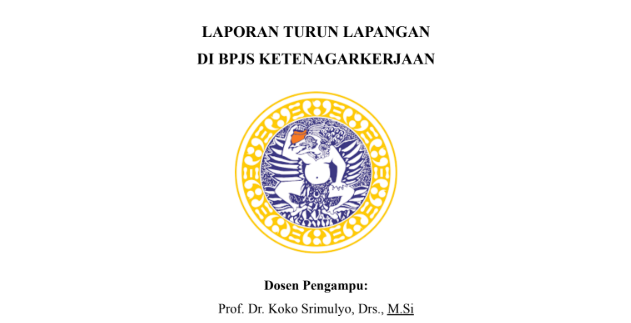
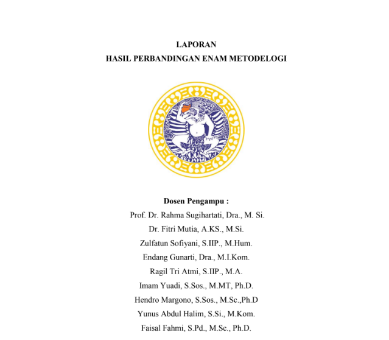

Karya & Proyek
Pilihan

Platform publikasi cerita digital berbasis HTML5, CSS3, dan Vanilla JavaScript yang dirancang untuk menyajikan karya naratif secara responsif. Menekankan struktur konten yang sederhana dan pengalaman membaca yang nyaman, serta dideploy menggunakan Vercel.
Lihat Proyek →
🔍'" />Sistem pencarian barang di lingkungan kampus berbasis Node.js, dilengkapi fitur login, dashboard interaktif, pencarian real-time, dan dashboard admin untuk memonitoring penemuan dan laporan barang hilang. Dideploy menggunakan Vercel.
Lihat Proyek →
🗺️'" />Portal informasi pariwisata yang menyajikan destinasi wisata, kuliner, dan budaya Sumatera Utara dalam struktur navigasi yang terorganisir. Dikembangkan menggunakan WordPress CMS dengan tema Astra dan Elementor, dilengkapi fitur live chat dan channel kontak interaktif.
Lihat Proyek →
Pengolahan koleksi bahan pustaka meliputi pembuatan label buku, penentuan nomor klasifikasi menggunakan DDC, pembuatan lidah buku, serta penyusunan kartu peminjaman dan kartu lidah. Data bibliografi diperoleh melalui sistem otomasi perpustakaan SLiMS.

📋'" />Laporan PKL Mata Kuliah Total Quality Management, berfokus pada pengamatan proses kerja, alur administrasi, dan pengelolaan dokumen organisasi BPJS Ketenagakerjaan Surabaya.
Lihat Proyek →
🔬'" />Laporan akademik perbandingan metodologi penelitian Ilmu Informasi dan Perpustakaan melalui studi literatur jurnal ilmiah dan analisis metode secara sistematis.
Lihat Proyek →